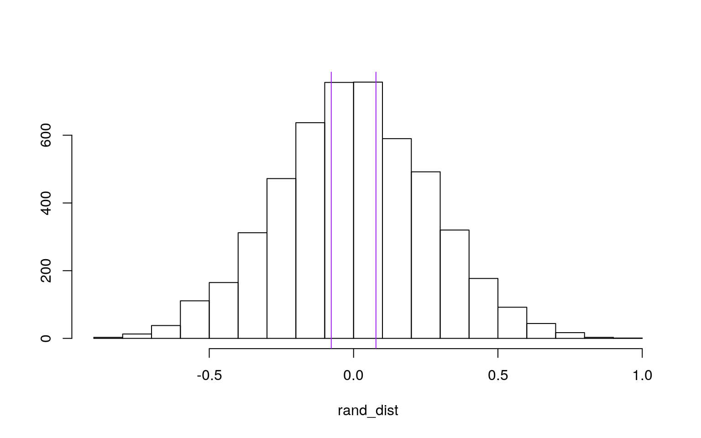
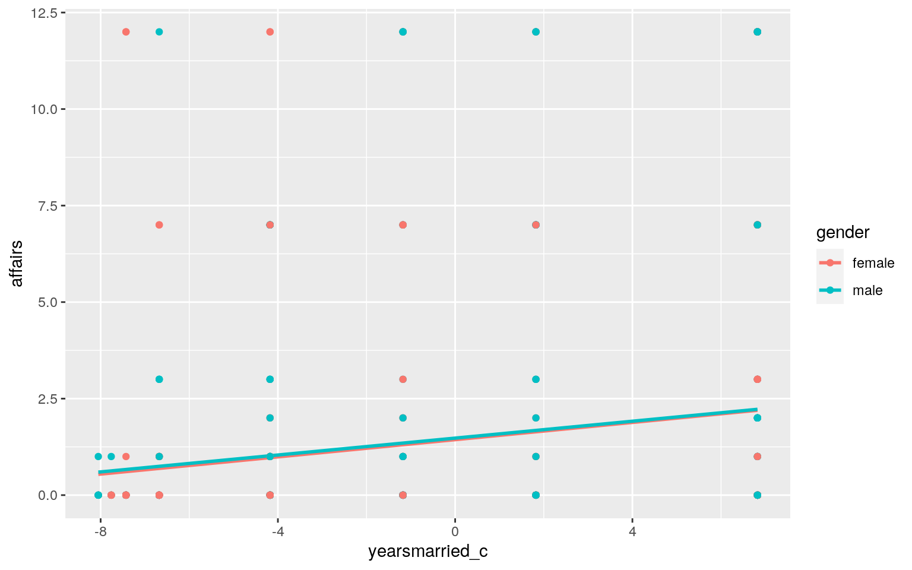
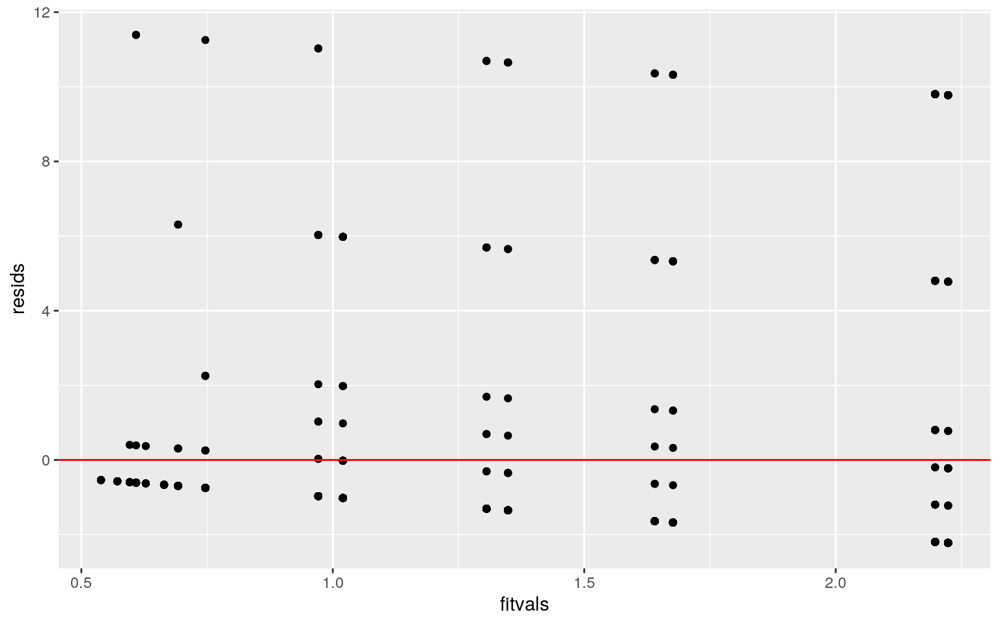
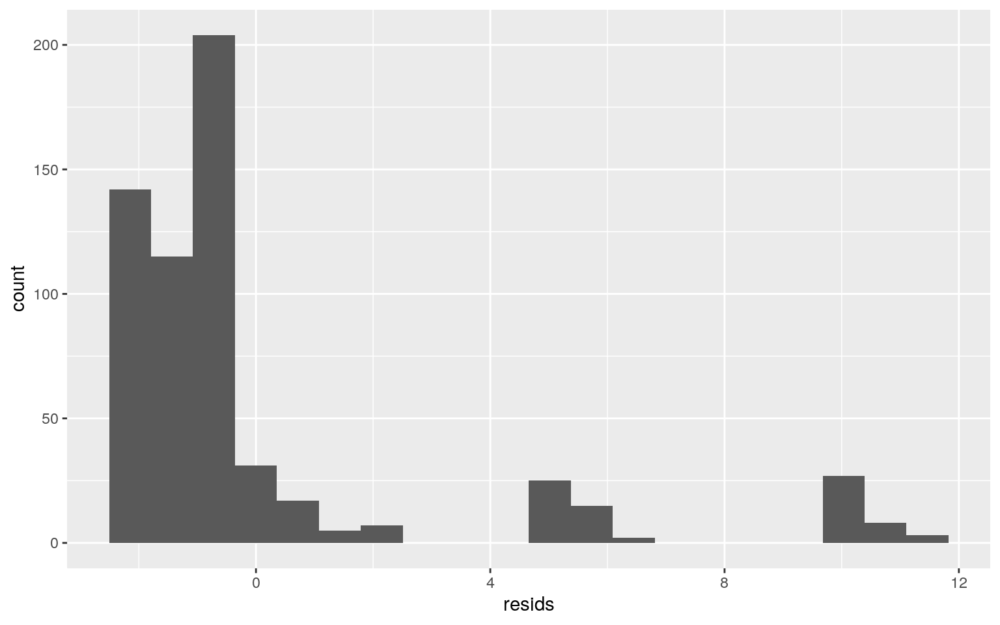
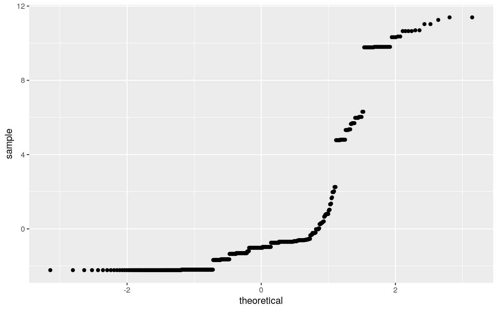
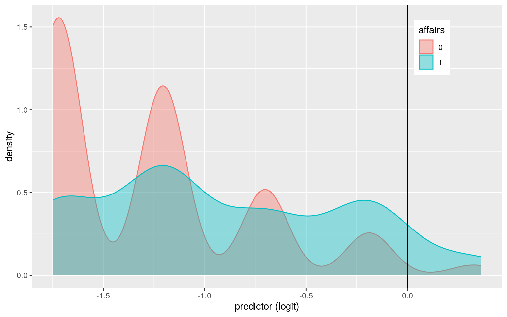
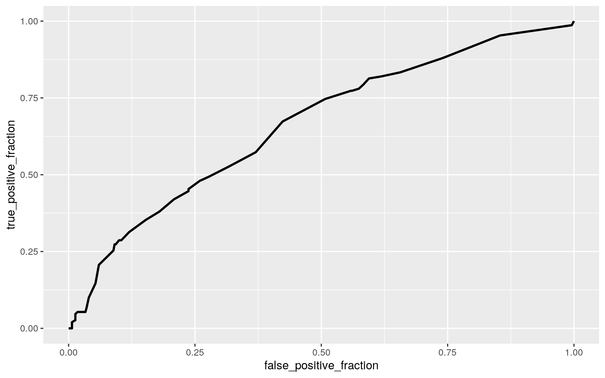

The dataset I chose is called "Affairs." This dataset has information based on infidelity data collected from a survey carried out by Psychology Today in 1969. The data has 601 observations on 9 variables. The 9 variables include affairs, gender, age, years married, children, religiousness, education, occupation, and rating. Affairs is numeric in which an entry of 0 means there were no extramarital affairs, whereas any number greater has had at least 1 affair. Gender states whether the entry is a male or female. Age is the median age range in which that person falls; for example 17.5 is defined as someone under 20, while 22 codes for the range 20-24, 27 for 25-29, and so on. Years married measures the years the person has been married ranging from 3 months or less to 12 or more years. Children is a yes or no answer that states if the person has children. Religiousness measures how religious the person interviewed is, and education measures the amount of education that person has. Occupation measures whether the person has an occupation and to what extent, i.e, no occupation to professional level on the Hollingshead classification with reverse numbering. Lastly, rating measures the degree of happiness that person feels in the marriage, with 1 being very unhappy to 5 being very happy. In order to read the data, install.packages("AER") was first downloaded.
library(AER)
data("Affairs")
head(Affairs)## affairs gender age yearsmarried children religiousness
education occupation rating
## 4 0 male 37 10.00 no 3 18 7 4
## 5 0 female 27 4.00 no 4 14 6 4
## 11 0 female 32 15.00 yes 1 12 1 4
## 16 0 male 57 15.00 yes 5 18 6 5
## 23 0 male 22 0.75 no 2 17 6 3
## 29 0 female 32 1.50 no 2 17 5 5man1 <- manova(cbind(affairs, yearsmarried, religiousness, education,
occupation, rating) ~ gender, data = Affairs)
summary(man1)## Df Pillai approx F num Df den Df Pr(>F)
## gender 1 0.25207 33.366 6 594 < 2.2e-16 ***
## Residuals 599
## ---
## Signif. codes: 0 '***' 0.001 '**' 0.01 '*' 0.05 '.' 0.1
' ' 1The overall MANOVA was significant with a p value of 2.2e-16 showing a mean difference across gender. A follow-up one-way ANOVA and a univariate ANOVA was then ran to see which variables were significant.
summary.aov(man1)## Response affairs :
## Df Sum Sq Mean Sq F value Pr(>F)
## gender 1 0.9 0.8993 0.0825 0.774
## Residuals 599 6528.2 10.8985
##
## Response yearsmarried :
## Df Sum Sq Mean Sq F value Pr(>F)
## gender 1 17.1 17.078 0.5498 0.4587
## Residuals 599 18606.6 31.063
##
## Response religiousness :
## Df Sum Sq Mean Sq F value Pr(>F)
## gender 1 0.05 0.04823 0.0353 0.851
## Residuals 599 817.80 1.36527
##
## Response education :
## Df Sum Sq Mean Sq F value Pr(>F)
## gender 1 547.25 547.25 112.41 < 2.2e-16 ***
## Residuals 599 2916.12 4.87
## ---
## Signif. codes: 0 '***' 0.001 '**' 0.01 '*' 0.05 '.' 0.1
' ' 1
##
## Response occupation :
## Df Sum Sq Mean Sq F value Pr(>F)
## gender 1 434.89 434.89 167.92 < 2.2e-16 ***
## Residuals 599 1551.34 2.59
## ---
## Signif. codes: 0 '***' 0.001 '**' 0.01 '*' 0.05 '.' 0.1
' ' 1
##
## Response rating :
## Df Sum Sq Mean Sq F value Pr(>F)
## gender 1 0.04 0.04133 0.0339 0.854
## Residuals 599 730.16 1.21897Affairs %>% group_by(gender) %>% summarize(mean(education), mean(occupation))## # A tibble: 2 x 3
## gender `mean(education)` `mean(occupation)`
## <fct> <dbl> <dbl>
## 1 female 15.3 3.38
## 2 male 17.2 5.09The follow-up one-way ANOVAs for each variable ran had two significant p values, both of 2.2e-16, for education and occupation. Both p values are significant for education and occupation meaning one gender differs. The univariate ANOVA showed a difference in means for education with females having a mean of 15.2571 (the range between some college and college graduate) and males having a mean of 17.1678 (the range between some graduate work and a masters degree). For the difference in means of occupation, women had a mean of 3.38413, and males had a mean of 5.08741 according to the Hollingshead classification. However, this is reverse numbering meaning women having a lower mean actually means their occupation is ranked higher/pays a higher salary, i.e, administrative personnel category vs skilled manual category for men.
library(rstatix)
group <- Affairs$gender
DVs <- Affairs %>% select(affairs, yearsmarried, religiousness,
education, occupation, rating)
sapply(split(DVs, group), mshapiro_test)## female male
## statistic 0.9263203 0.9469353
## p.value 2.346241e-11 1.197608e-08MANOVA assumptions include random samples of independent observations, multivariate normality of DVs, homogeneity of within-group covariance matrices, linear relationships among DVs, no extreme univarite or multivariate outliers, and no multicollinearity. Since p<.05, at least one assumption for MANOVA was violated.
A one-way MANOVA was conducteed to determine the effect of gender on affairs, years married, religiousness, education, occupation, and rating. Examination of bivariate density plots for each group revealed no stark deparures from multivariate normality. Examination of covariance matrices for each group revealed relative homogeneity. No univariate or multivariate outliers were evident and MANOVA was considered to be an appropriate analysis technique.
Significant differences were found among the two genders for at least one of the 6 dependent variables, Pillai trace = 0.25207, pseudo F (6, 594) = 33.366, p < 2.2e-16.
Univariate ANOVAs for each dependent variable were conducted as follow-up tests to the MANOVA, using the Bonferroni method for controlling Type I error rates for multiple comparisons. The univariate ANOVAs for education and occupation were significant, F (1, 599) = 112.41, p < 2.2e-16, and F (1, 599) = 167.92, p < 2.2e-16, respectively.
Post-hoc t-tests were not needed since there are only 2 genders in our category, and we already know one differs. 1 MANOVA and 2 ANOVAs were performed, therefore a bonferroni α = .05/3 = 0.0167 should be used.
However, if there were more than 2 genders in the data, post-hoc analysis would be performed as such below, showing the same p value of p < 2.2e-16.:
pairwise.t.test(Affairs$education, Affairs$gender, p.adj = "none")##
## Pairwise comparisons using t tests with pooled SD
##
## data: Affairs$education and Affairs$gender
##
## female
## male <2e-16
##
## P value adjustment method: nonepairwise.t.test(Affairs$occupation, Affairs$gender, p.adj = "none")##
## Pairwise comparisons using t tests with pooled SD
##
## data: Affairs$occupation and Affairs$gender
##
## female
## male <2e-16
##
## P value adjustment method: noneAffairs %>% group_by(gender) %>% summarize(mean = mean(affairs)) %>%
summarize(diff(mean))## # A tibble: 1 x 1
## `diff(mean)`
## <dbl>
## 1 0.0775rand_dist <- vector()
for (i in 1:5000) {
new <- data.frame(affairs = sample(Affairs$affairs), gender = Affairs$gender)
rand_dist[i] <- mean(new[new$gender == "male", ]$affairs) -
mean(new[new$gender == "female", ]$affairs)
}
mean(rand_dist > 0.0774559 | rand_dist < -0.0774559)## [1] 0.7602t.test(data = Affairs, affairs ~ gender)##
## Welch Two Sample t-test
##
## data: affairs by gender
## t = -0.28733, df = 594.01, p-value = 0.774
## alternative hypothesis: true difference in means is not
equal to 0
## 95 percent confidence interval:
## -0.6068861 0.4519744
## sample estimates:
## mean in group female mean in group male
## 1.419048 1.496503The mean difference in number of affairs for two genders was performed. The actual observed test statistic/mean difference was calculated as 0.0774559. This was then randomized 5,000 times.
null hypothesis: mean number of affairs is the same for males and females
alternative hypothesis: mean number of affairs is different for males and females
The hand calculated p-value of 0.7696 corresponds to the probability of observing a mean difference as extreme as the one we got under this randomization distribution. An independent-samples t test was used for comparison and yeilded a p-value of 0.774. Both p values fail to reject the null hypothesis (the mean number of affairs is the same for males and females).
{
hist(rand_dist, main = "", ylab = "")
abline(v = c(-0.07745, 0.07745), col = "purple")
}
Affairs$yearsmarried_c <- Affairs$yearsmarried - mean(Affairs$yearsmarried)
fit <- lm(affairs ~ gender * yearsmarried_c, data = Affairs)
summary(fit)##
## Call:
## lm(formula = affairs ~ gender * yearsmarried_c, data =
Affairs)
##
## Residuals:
## Min 1Q Median 3Q Max
## -2.2235 -1.6765 -1.0201 -0.5717 11.3912
##
## Coefficients:
## Estimate Std. Error t value Pr(>|t|)
## (Intercept) 1.436957 0.183120 7.847 1.98e-14 ***
## gendermale 0.040193 0.265470 0.151 0.879709
## yearsmarried_c 0.111497 0.032580 3.422 0.000664 ***
## gendermale:yearsmarried_c -0.002099 0.047746 -0.044
0.964950
## ---
## Signif. codes: 0 '***' 0.001 '**' 0.01 '*' 0.05 '.' 0.1
' ' 1
##
## Residual standard error: 3.249 on 597 degrees of freedom
## Multiple R-squared: 0.03495, Adjusted R-squared: 0.0301
## F-statistic: 7.207 on 3 and 597 DF, p-value: 9.314e-05After mean centering years married, 1.4369 is the mean/predicted number of affairs for females with the average years married. For people with the average years married, males have an average/predicted number of affairs that is .040193 greater than females. The estimated slope for years married on the number of affairs for females is 0.111497 and the difference in slopes is -0.002099.
ggplot(Affairs, aes(yearsmarried_c, affairs, color = gender)) +
geom_smooth(method = "lm", se = F, fullrange = T) + geom_point()
resids <- fit$residuals
fitvals <- fit$fitted.values
ggplot() + geom_point(aes(fitvals, resids)) + geom_hline(yintercept = 0,
col = "red")
library(lmtest)
library(sandwich)
bptest(fit)##
## studentized Breusch-Pagan test
##
## data: fit
## BP = 20.682, df = 3, p-value = 0.0001226ggplot() + geom_histogram(aes(resids), bins = 20)
ggplot() + geom_qq(aes(sample = resids)) + geom_qq_line() Assumptions were not met. This is shown graphically, as well as through the studentized Breusch-Pagan test that yeilded a p-value = 0.0001226. Since it is less than 0.05, we reject the null hypothesis that homoskedacticity is met.
coeftest(lm(affairs ~ gender * yearsmarried_c, data = Affairs),
vcov = vcovHC(lm(affairs ~ gender * yearsmarried_c, data = Affairs)))##
## t test of coefficients:
##
## Estimate Std. Error t value Pr(>|t|)
## (Intercept) 1.436957 0.186315 7.7125 5.192e-14 ***
## gendermale 0.040193 0.265711 0.1513 0.879818
## yearsmarried_c 0.111497 0.033791 3.2996 0.001026 **
## gendermale:yearsmarried_c -0.002099 0.047283 -0.0444
0.964606
## ---
## Signif. codes: 0 '***' 0.001 '**' 0.01 '*' 0.05 '.' 0.1
' ' 1After recomputing the regression results with robust standard errors, 1.4369 remained as the mean/predicted number of affairs for females with the average years married with a significant p value of p = 5.192e-14. For people with the average years married, males also remained having an average/predicted number of affairs of 0.040193 greater than females with. However, the estimated slope for years married on the number of affairs for females changed from 0.111497 to 3.2996 with a significant p value = 0.001026, while the difference in slopes also changed from -0.002099 to -0.0444.
R squared says 3.495% of variability in affairs is explained by the overall model with both gender and years married predictors. While the adjusted R^2 is about the same at 3.01%, this is with penalty for each extra explanatory variable.
The same regression model was ran, and the bootstrapped standard errors by resampling residuals were computed.
fit <- lm(affairs ~ gender * yearsmarried_c, data = Affairs)
resids <- fit$residuals
fitted <- fit$fitted.values
resid_resamp <- replicate(5000, {
new_resids <- sample(resids, replace = TRUE)
newdat <- Affairs
newdat$new_y <- fitted + new_resids
fit <- lm(new_y ~ gender * yearsmarried_c, data = newdat)
coef(fit)
})
resid_resamp %>% t %>% as.data.frame %>% summarize_all(sd)## (Intercept) gendermale yearsmarried_c
gendermale:yearsmarried_c
## 1 0.1813775 0.2671172 0.03298095 0.04815768resid_resamp %>% t %>% as.data.frame %>% pivot_longer(1:3) %>%
group_by(name) %>% summarize(lower = quantile(value, 0.025),
upper = quantile(value, 0.975))## # A tibble: 3 x 3
## name lower upper
## <chr> <dbl> <dbl>
## 1 (Intercept) 1.08 1.80
## 2 gendermale -0.482 0.549
## 3 yearsmarried_c 0.0472 0.178coeftest(fit)[, 1:2]## Estimate Std. Error
## (Intercept) 1.436956873 0.18312007
## gendermale 0.040192735 0.26546955
## yearsmarried_c 0.111496839 0.03258020
## gendermale:yearsmarried_c -0.002098995 0.04774633coeftest(fit, vcov = vcovHC(fit))[, 1:2]## Estimate Std. Error
## (Intercept) 1.436956873 0.18631514
## gendermale 0.040192735 0.26571144
## yearsmarried_c 0.111496839 0.03379133
## gendermale:yearsmarried_c -0.002098995 0.04728257resid_resamp %>% t %>% as.data.frame %>% summarize_all(sd)## (Intercept) gendermale yearsmarried_c
gendermale:yearsmarried_c
## 1 0.1813775 0.2671172 0.03298095 0.04815768As shown above, the standard errors all remained relatively the same. For the intercept, or the mean/predicted number of affairs for females with the average years married, the original standard error was 0.18312007, while the robust was 0.18631514, and the bootstrapped were 0.1833986. For the gendermale coefficient that predicted the number of affairs greater than females, the original standard error was 0.26546955, the robust was 0.26571144, and the bootstrapped was 0.2670994. The yearsmarried_c coefficient, or the estimated slope for years married on the number of affairs for females had an original standard error of 0.03258020, a robust of 0.03379133, and a bootstrapped of 0.0325755. Lastly, the gendermale:yearsmarried_c coefficient or the difference in slopes, had an original standard error of 0.04774633, a robust of 0.04728257, and a bootstrapped of 0.04758351. The changes in standard error for all comparisons were minimal, only changing after around the thousandths place.
For this logisitic regression, the variable "affairs" was turned into a binary variable, where 0 means no affair has happened and 1 means at least 1 affair has occurred.
AffairsData <- Affairs %>% mutate(affairs = ifelse(affairs ==
"0", 0, 1))
fit2 <- glm(affairs ~ rating + age, family = "binomial", data = AffairsData)
summary(fit2)##
## Call:
## glm(formula = affairs ~ rating + age, family =
"binomial", data = AffairsData)
##
## Deviance Residuals:
## Min 1Q Median 3Q Max
## -1.3341 -0.7265 -0.5758 -0.5673 1.9526
##
## Coefficients:
## Estimate Std. Error z value Pr(>|z|)
## (Intercept) 0.739602 0.525294 1.408 0.159
## rating -0.504747 0.086305 -5.848 4.96e-09 ***
## age 0.002216 0.010655 0.208 0.835
## ---
## Signif. codes: 0 '***' 0.001 '**' 0.01 '*' 0.05 '.' 0.1
' ' 1
##
## (Dispersion parameter for binomial family taken to be 1)
##
## Null deviance: 675.38 on 600 degrees of freedom
## Residual deviance: 638.24 on 598 degrees of freedom
## AIC: 644.24
##
## Number of Fisher Scoring iterations: 4exp(coef(fit2))## (Intercept) rating age
## 2.0951021 0.6036582 1.0022182The intercept for exp(coef(fit2)), shows the odds of an affair when rank and age are equal to 0 is 2.095. Controlling for age, for every additional rating point, odds of an affair occurring increase by a factor of 0.603 (significant). On the otherhand, controlling for age, for every one additional year of age, odds of an affair increase by a factor of 1.002 (not significant).
probs2 <- predict(fit2, type = "response")
table(predict = as.numeric(probs2 > 0.5), truth = AffairsData$affairs) %>%
addmargins## truth
## predict 0 1 Sum
## 0 443 142 585
## 1 8 8 16
## Sum 451 150 601class_diag(probs2, AffairsData$affairs)## acc sens spec ppv f1 auc
## 1 0.750416 0.05333333 0.9822616 0.5 0.09638554 0.6622542Accuracy was found to be 0.75 which is the proportion of correctly classified cases. Sensitivity, the true positive rate (TPR), was found to be 0.053; this shows the probability of predicting an affair if one actually occurred. Specificity, the true negative rate (TNR) or the proportion of non-affairs correctly classified, was found to be 0.982. Precision (PPV) was found to be 0.5 which is the proportion of those classified as affairs who actually are affairs. AUC was found to be 0.66225 which is considered a poor prediction model.
AffairsData$affairs <- as.factor(AffairsData$affairs)
AffairsData$logit <- predict(fit2, type = "link")
AffairsData %>% ggplot(aes(logit, color = affairs, fill = affairs)) +
geom_density(alpha = 0.4) + theme(legend.position = c(0.85,
0.85)) + geom_vline(xintercept = 0) + xlab("predictor (logit)")
AffairsData <- Affairs %>% mutate(affairs = ifelse(affairs ==
"0", 0, 1))
fit2 <- glm(affairs ~ rating + age, family = "binomial", data = AffairsData)
summary(fit2)##
## Call:
## glm(formula = affairs ~ rating + age, family =
"binomial", data = AffairsData)
##
## Deviance Residuals:
## Min 1Q Median 3Q Max
## -1.3341 -0.7265 -0.5758 -0.5673 1.9526
##
## Coefficients:
## Estimate Std. Error z value Pr(>|z|)
## (Intercept) 0.739602 0.525294 1.408 0.159
## rating -0.504747 0.086305 -5.848 4.96e-09 ***
## age 0.002216 0.010655 0.208 0.835
## ---
## Signif. codes: 0 '***' 0.001 '**' 0.01 '*' 0.05 '.' 0.1
' ' 1
##
## (Dispersion parameter for binomial family taken to be 1)
##
## Null deviance: 675.38 on 600 degrees of freedom
## Residual deviance: 638.24 on 598 degrees of freedom
## AIC: 644.24
##
## Number of Fisher Scoring iterations: 4exp(coef(fit2))## (Intercept) rating age
## 2.0951021 0.6036582 1.0022182probs2 <- predict(fit2, type = "response")
library(plotROC)
ROCplot <- ggplot(AffairsData) + geom_roc(aes(d = affairs, m = probs2),
n.cuts = 0)
ROCplot
calc_auc(ROCplot)## PANEL group AUC
## 1 1 -1 0.6622542*The ROC curve was generated and the AUC was calculated to be 0.66225 which is the same as what was calculated in the class diagnostics showing a poor prediction model.
AffairsData <- Affairs %>% mutate(affairs = ifelse(affairs ==
"0", 0, 1))
library(tidyverse)
library(lmtest)
fit3 <- glm(affairs ~ ., data = AffairsData, family = "binomial")
summary(fit3)##
## Call:
## glm(formula = affairs ~ ., family = "binomial", data =
AffairsData)
##
## Deviance Residuals:
## Min 1Q Median 3Q Max
## -1.5713 -0.7499 -0.5690 -0.2539 2.5191
##
## Coefficients: (1 not defined because of singularities)
## Estimate Std. Error z value Pr(>|z|)
## (Intercept) 1.37726 0.88776 1.551 0.120807
## gendermale 0.28029 0.23909 1.172 0.241083
## age -0.04426 0.01825 -2.425 0.015301 *
## yearsmarried 0.09477 0.03221 2.942 0.003262 **
## childrenyes 0.39767 0.29151 1.364 0.172508
## religiousness -0.32472 0.08975 -3.618 0.000297 ***
## education 0.02105 0.05051 0.417 0.676851
## occupation 0.03092 0.07178 0.431 0.666630
## rating -0.46845 0.09091 -5.153 2.56e-07 ***
## yearsmarried_c NA NA NA NA
## ---
## Signif. codes: 0 '***' 0.001 '**' 0.01 '*' 0.05 '.' 0.1
' ' 1
##
## (Dispersion parameter for binomial family taken to be 1)
##
## Null deviance: 675.38 on 600 degrees of freedom
## Residual deviance: 609.51 on 592 degrees of freedom
## AIC: 627.51
##
## Number of Fisher Scoring iterations: 4coef(fit3)## (Intercept) gendermale age yearsmarried childrenyes
religiousness
## 1.37725816 0.28028665 -0.04425502 0.09477302 0.39767213
-0.32472063
## education occupation rating yearsmarried_c
## 0.02105086 0.03091971 -0.46845426 NAexp(coef(fit3))## (Intercept) gendermale age yearsmarried childrenyes
religiousness
## 3.9640180 1.3235091 0.9567099 1.0994093 1.4883560
0.7227292
## education occupation rating yearsmarried_c
## 1.0212740 1.0314027 0.6259691 NAprobs3 <- predict(fit3, type = "response")
class_diag(probs3, AffairsData$affairs)## acc sens spec ppv f1 auc
## 1 0.765391 0.1666667 0.9645233 0.6097561 0.2617801
0.7120177Accuracy was found to be 0.765 which is the proportion of correctly classified cases. Sensitivity, the true positive rate (TPR), was found to be 0.167; this shows the probability of predicting an affair if one actually occurred. Specificity, the true negative rate (TNR) or the proportion of non-affairs correctly classified, was found to be 0.964. Precision (PPV) was found to be 0.609 which is the proportion of those classified as affairs who actually are affairs. AUC was found to be 0.712 which is considered a fair prediction model.
The intercept for exp(coef(fit3)), shows the odds of an affair for a female without kids when all other variables are equal to 0 is 3.96. Controlling for all other variables, when gender is male, odds of an affair occurring increase by a factor of 1.3235 (significant). Controlling for all other variables, for every one additional increase in age, odds of an affair increased by a factor of 0.9567 (significant). Controlling for all other variables, for every one additional year married, odds of an affair increased by 1.099 (significant). Controlling for all other variables, when a person has children odds of an affair increase by a factor of 1.488. Controlling for all other variables, when religiousness increases by an additional factor, odds of an affair increase by 0.7227 (significant). Controlling for all other variables, for every one additional increase in education, odds of an affair increase by 1.02127. Controlling for all other variables, for every one additional increase in occupation, odds of an affair increase by 1.0314. Controlling for all other variables, for every one additional increase in marriage rating, odds of an affair increase by 0.6259 (significant).
set.seed(1234)
k = 10
data <- AffairsData %>% sample_frac
folds <- ntile(1:nrow(data), n = 10)
diags <- NULL
for (i in 1:k) {
train <- data[folds != i, ]
test <- data[folds == i, ]
truth <- test$affairs
fit <- glm(affairs ~ ., data = train, family = "binomial")
probs <- predict(fit, newdata = test, type = "response")
diags <- rbind(diags, class_diag(probs, truth))
}
diags %>% summarize_all(mean)## acc sens spec ppv f1 auc
## 1 0.7621311 0.1668399 0.9647522 0.5866667 NaN 0.6960616When a 10-fold CV was performed on the same model, the out-of-sample classification diagnostics differed slightly. Accuracy in the 10-fold sample decreased to 0.762 from the original 0.765. Sensitivity (TPR) also decreased to 0.166 from 0.167. Specificity (TNR) was 0.9647 which was small increase from the original at 0.9645. Precision decreased from 0.609 originally to 0.586, with the largest difference from the original class diagnostics of 0.023. Lastly, AUC also decreased from a fair model of 0.712 to a poor model with an AUC of 0.696 indicating overfitting.
library(glmnet)
set.seed(1234)
x <- model.matrix(affairs ~ ., data = AffairsData)[, -1]
x <- scale(x)
y <- as.matrix(AffairsData$affairs)
cv <- cv.glmnet(x, y, family = "binomial")
lasso <- glmnet(x, y, family = "binomial", lambda = cv$lambda.1se)
coef(lasso)## 10 x 1 sparse Matrix of class "dgCMatrix"
## s0
## (Intercept) -1.1117167
## gendermale .
## age .
## yearsmarried .
## childrenyes .
## religiousness .
## education .
## occupation .
## rating -0.2109564
## yearsmarried_c .LASSO was performed on the same model with all variables. The only variable retained was rating, meaning rating is the most predictive of affairs.
set.seed(1234)
k = 10
data <- AffairsData %>% sample_frac
folds <- ntile(1:nrow(data), n = 10)
diags <- NULL
for (i in 1:k) {
train <- data[folds != i, ]
test <- data[folds == i, ]
truth <- test$affairs
fit <- glm(affairs ~ rating, data = train, family = "binomial")
probs <- predict(fit, newdata = test, type = "response")
diags <- rbind(diags, class_diag(probs, truth))
}
diags %>% summarize_all(mean)## acc sens spec ppv f1 auc
## 1 0.7504645 0.05551123 0.9820111 NaN NaN 0.6523631Using only rating, this 10-fold CV model's out-of-sample AUC was 0.6523 which is deemed a poor prediction model. Compared to the original logistic regression that used all variables, this AUC is lower than the original's fair prediction model AUC of 0.712, indicating it is overfitting more and more. However, it is in the same AUC category at the 10-fold CV of the original model that used all variables with an AUC of 0.696. Both 10-fold CV models were poor prediction models and relatively similar.